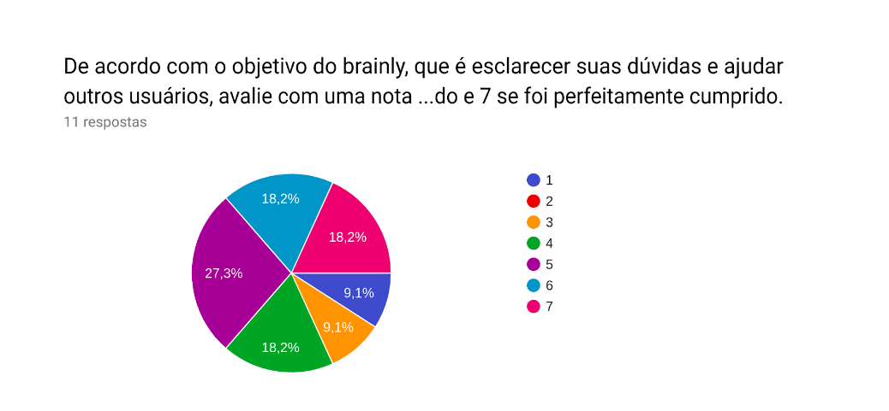
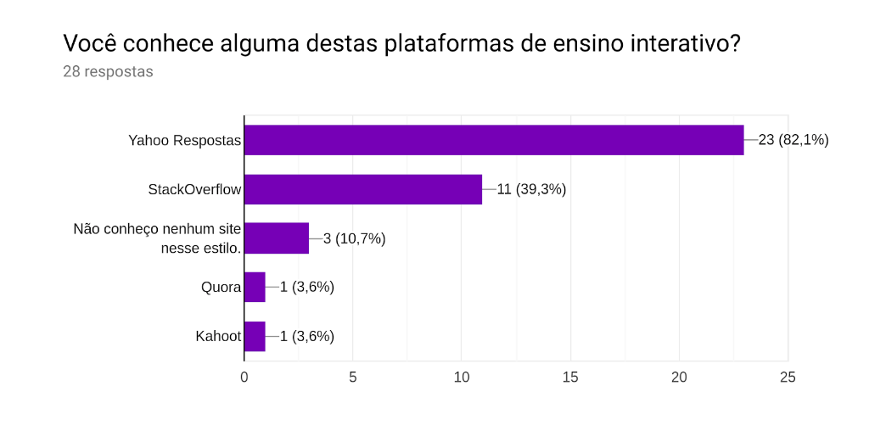

Análise das respostas do questionário
Pergunta 1
 De acordo com esse dado a plataforma não é tão conhecida pelo público entrevistado, no caso o público universitário.
De acordo com esse dado a plataforma não é tão conhecida pelo público entrevistado, no caso o público universitário.
Pergunta 2
- Pergunda dissertativa
Pergunta 3
 Para usuários que já conhecem a plataforma o sistema de gamificação tem incentivado na hora de ajudar a plataforma com respostas. Isso não tira o fato de que reforçar o conhecimento é um foco principal.
Para usuários que já conhecem a plataforma o sistema de gamificação tem incentivado na hora de ajudar a plataforma com respostas. Isso não tira o fato de que reforçar o conhecimento é um foco principal.
Pergunta 4
- Pergunda dissertativa
Pergunta 5
 Esses dados mostram que a divisão de matérias tem uma taxa baixa de rejeição, e pode ser considerada boa, sendo que a maioria dos usuários se mostram indiferentes e uma boa parte concorda que a divisão é boa do jeito que está.
Esses dados mostram que a divisão de matérias tem uma taxa baixa de rejeição, e pode ser considerada boa, sendo que a maioria dos usuários se mostram indiferentes e uma boa parte concorda que a divisão é boa do jeito que está.
Pergunta 6
 De acordo com o questionário o chat não é algo essencial para os usuários do brainly, portanto a política adotada de indisponibilizar o chat para novos usuários é bastante eficiente. Além de evitar problemas de integridade moral dos usuários não trás uma grande perda para o app.
De acordo com o questionário o chat não é algo essencial para os usuários do brainly, portanto a política adotada de indisponibilizar o chat para novos usuários é bastante eficiente. Além de evitar problemas de integridade moral dos usuários não trás uma grande perda para o app.
Pergunta 7
- Pergunda dissertativa
Pergunta 8
 Para mais da metade dos entrevistados, a plataforma tem postura positiva no quesito de exercer seu objetivo principal, a taxa de pessoas que discordam dessa afirmação é baixa.
Pergunta 9
 O dado acima é reforçado, pelo fato de muitas pessoas conhecem plataformas concorrentes porém não conhecem o brainly. Isso mostra que o sistema tem perdido usuários do âmbito universitário para outras plataformas.
Pergunta 10
 Boa parte do público não tem intenção de acessar plataformas similares para responder perguntas. Portanto o trabalho de tornar o ato de responder dúvidas atrativo é importante.
Boa parte do público não tem intenção de acessar plataformas similares para responder perguntas. Portanto o trabalho de tornar o ato de responder dúvidas atrativo é importante.
Pergunta 11
 O retorno monetário como incentivo se mostrou indiferente para muitos usuários. O fator mais relevante para incentivar usuários a responder dúvidas é reforçar o conhecimento que ele já possui.
O retorno monetário como incentivo se mostrou indiferente para muitos usuários. O fator mais relevante para incentivar usuários a responder dúvidas é reforçar o conhecimento que ele já possui.
Pergunta 12
 Pode-se perceber que os usuários de nossa pesquisa em sua maioria preferem a divisão em níveis de escolaridade, assim podemos concluir que o Brainly fez uma boa divisão.
Pode-se perceber que os usuários de nossa pesquisa em sua maioria preferem a divisão em níveis de escolaridade, assim podemos concluir que o Brainly fez uma boa divisão.
Pergunta 13
 Essa resposta reforça o que já foi deixado claro, que o principal incentivo para um usuário responder perguntas na plataforma é reforçar seu conhecimento. Também podemos ver que a grande maioria tem interesse apenas em receber respostas rápidas, e que a interação com quem respondeu ou quem perguntou não é algo primordial
Essa resposta reforça o que já foi deixado claro, que o principal incentivo para um usuário responder perguntas na plataforma é reforçar seu conhecimento. Também podemos ver que a grande maioria tem interesse apenas em receber respostas rápidas, e que a interação com quem respondeu ou quem perguntou não é algo primordial
Pergunta 14
 Esse resultado mostra que foi feita uma boa escolha de público para a pesquisa, pois boa parte deste teria ou poderia ter interesse em conhecer o brainly.
Esse resultado mostra que foi feita uma boa escolha de público para a pesquisa, pois boa parte deste teria ou poderia ter interesse em conhecer o brainly.